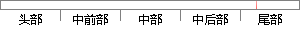

本地日志系统只适用于用户能够访问验证机器的情况。
片段位置图

相似结果|
相似片段 1：；内容缓存功能能够将用户经常访问的网页保存在本地缓存中，减少浏览网页时的访问延迟；日志审计功能是系统能够记录用户使用Web应用的情况，从这些日志信息中能够提取出网络的使用情况，安全问题等重要信息。
相似片段 2：因此对这些存储在用户机器上的机密信息就需要有一套完整的安全机制来确保其在本地存储期间的安全性。机密信息以密文方式存储，信息的完整性能够得到验证，仅有得到授权的用户才能对加密信息进行访问和解密。5．
|
※ 片段修改建议 ※
近似词参考：- 本地：当地
- 日志：日记
- 系统：体系
- 能够：可以或许
- 访问：拜候 会见 接见 走访
- 机器：机械 呆板
- 情况：环境 情形
系统自动生成语句：当地日记体系只适用于用户可以或许拜候验证机械的环境。
注：本片段修改建议为系统自动生成，仅供参考。